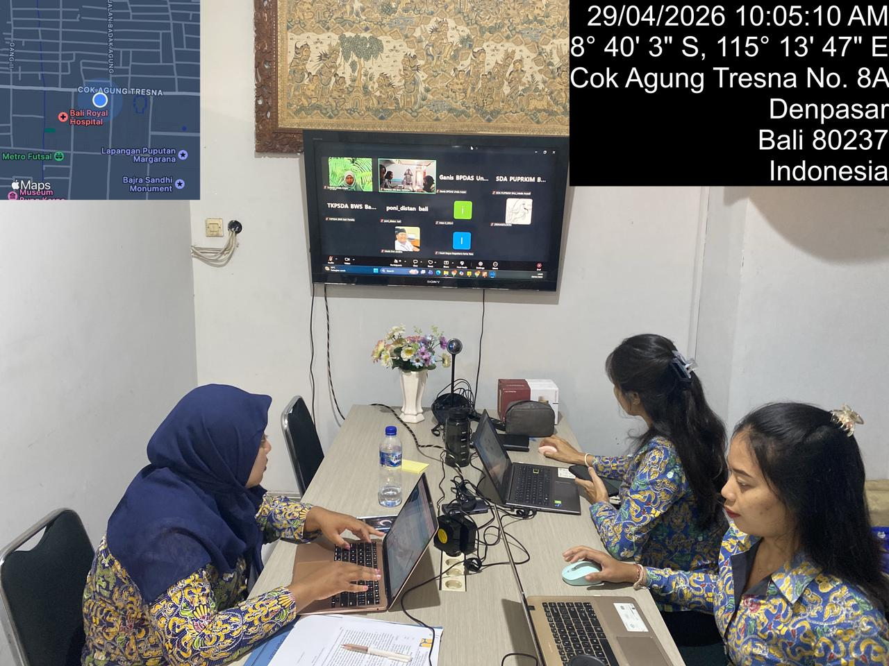

Rapat Koordinasi Pengelolaan SIH3 Wilayah Sungai Bali Penida

Berdasarkan hasil Rapat Koordinasi Pengelolaan Sistem Informasi Hidrologi, Hidrometeorologi, dan Hidrogeologi (SIH3) di wilayah Sungai Bali Penida yang diadakan pada 29 April 2026, pihak-pihak yang terlibat membicarakan kemajuan dalam pembuatan kebijakan, peningkatan kerjasama antar lembaga, serta percepatan pengembangan Portal SIH3 sebagai pusat informasi yang mengintegrasikan data sumber daya air. Pertemuan ini menghasilkan beberapa kesepakatan penting, seperti penyempurnaan rancangan peraturan gubernur tentang pengelolaan PSIH3, peningkatan kerjasama dalam penyediaan dan penyelarasan data hidrologi, hidrometeorologi, dan hidrogeologi, serta penguatan support teknis dari berbagai lembaga seperti BMKG, Dinas ESDM, BPDAS, dan Bappeda Provinsi Bali.
Selain itu, juga dinyatakan bahwa pengembangan Portal SIH3 terus dilanjutkan dengan dukungan dari ahli dan anggaran yang cukup, sehingga diharapkan dapat segera terwujud sebagai media informasi yang membantu pengelolaan sumber daya air yang efisien, terintegrasi, dan berkelanjutan di wilayah Sungai Bali Penida.